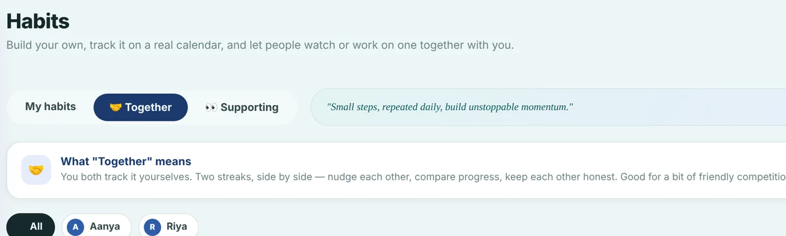
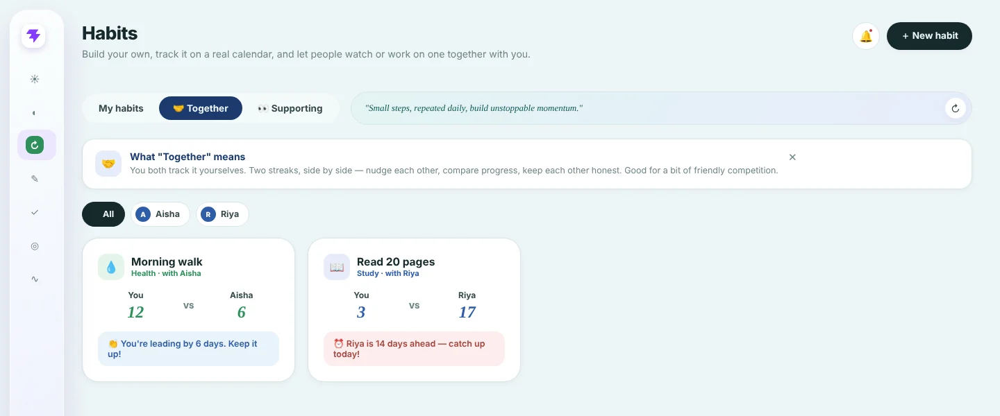
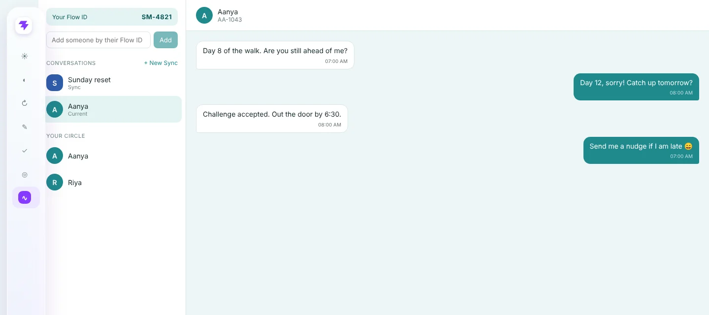

Journals for learners, then one app for the whole day
Kitten Notes started as journals for learners. It grew a digital journaling space, and that digital side became Flowify, my first app. I got a working prototype out in under three weeks and kept it live for nine months.
Kitten Notes
Journals made for learners. The product people could hold.
Digital journaling space
The same habit of writing things down, moved online.
Flowify
Journal, habits, tasks, goals and messages in one place, built to be done with friends.
months live
signups
weeks to a prototype
app I shipped
Self-improvement is scattered, and habits fade alone
Ten apps for one routine
A journal here, a habit tracker there, a task list somewhere else. Nothing connected, so nothing stuck.
Habits fade when private
A streak nobody sees is easy to drop. There is no one to notice a missed day.
Social apps are too loud
Public feeds turn personal goals into performance. I wanted accountability without an audience.
The bet: put the whole day in one place, and let a few people you trust watch or work on a habit with you.
One place for the day
Flowify covered the daily loop. Pick a module to see it.
Two friends, one habit, side by side
Habits had three views: My habits, Together and Supporting. The difference is who does the work.
You both do it
Two streaks side by side. You nudge each other, compare progress and keep each other honest. It suits a bit of friendly competition.
One does it, one cheers
A friend works on a habit and you watch and support, without having to run one yourself.


Pairing is invite-first. You choose who joins, so every comparison is between people who agreed to it.
A private conversation next to the habit
Messages lived inside the app, so a nudge and a reply stayed next to the streak they were about. There were two kinds: Current, a one-to-one chat, and Sync, a small group. A Flow ID circle held the people you chose to connect with. There was no public feed.

Small decisions that shaped it
A fixed mood vocabulary
The journal used a small set of moods rather than free tags, so entries stay quick and comparable over time.
Invite-first pairing
No discovery, no strangers. You bring people you already know.
One place, not ten
Journal, habits, tasks and goals share one app so the day reads as a single story.
A real app, scoped as an MVP
Flowify is a React and Vite app on Supabase, with row level security so people only see what they should, and realtime updates for shared habits and messages. It also had themes and nudges. I scoped it as an MVP: the loop had to work end to end, and gaps were acceptable.
Organic users stayed, scaling needed money
Over nine months Flowify gathered around 300 signups. Daily active users moved up and down, but the people who found it organically liked it and kept coming back. Growing past that meant paying for acquisition, and I did not have that budget. I closed it.
Distribution is half the product
Plan distribution early
Liking the product is not the same as finding it. Acquisition needs a plan and a budget from the start.
Social needs two people
A friends feature works only after the first friend arrives, so the invite is part of the product.
Ship small, learn fast
A prototype in under three weeks gave real feedback far sooner than planning would have.